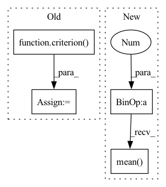

Pattern ID :29675

Before Change
fake_images = G(input_z)
d_out_fake = D(fake_images)
//誤差の計算
g_loss = criterion(d_out_fake.view(-1),label_real)
//誤差を伝搬
g_optimizer.zero_grad()
d_optimizer.zero_grad()
g_loss.backward()
After Change
// d_loss_real = criterion(d_out_real.view(-1),label_real)
// d_loss_fake = criterion(d_out_fake.view(-1),label_fake)
d_loss_real = torch.nn.ReLU()(1.0-d_out_real).mean()
d_loss_fake = torch.nn.ReLU()(1.0+d_out_fake).mean()
d_loss = d_loss_real + d_loss_fake
//誤差を伝搬
g_optimizer.zero_grad()
d_optimizer.zero_grad()
In pattern: SUPERPATTERN
Frequency: 3
Non-data size: 4
Instances
Fragment ID: 87945341
Project Name: zassou65535/image_generator
Commit Name: 0d1f9d59248bbe59037827d4a2f017e6c6b20344
Time: 2020-02-06
Author: nakamura.k.bv@m.titech.ac.jp
File Name: GAN.py
M Class Name: AnonimousClass
N Class Name: AnonimousClass
M Method Name: train_model(4)
N Method Name: train_model(4)
M Parent Class:
N Parent Class:
M File Name: GAN.py
N File Name: GAN.py
M Start Line: 31
M End Line: 108
N Start Line: 83
N End Line: 111
'>
Before Change
B_pred = self.nnls_reg2(H_profile)
criterion = nn.MSELoss()
model_score = criterion(B_pred, B).item()
return model_score
After Change
print(true_prop.shape)
pred = pred/torch.sum(pred, 1, keepdims=True).clamp(min=1e-6)
true_prop = true_prop/torch.sum(true_prop, 1, keepdims=True).clamp(min=1e-6)
loss = ((pred - true_prop)**2).mean()
return loss.detach().item()
'>
Fragment ID: 87945342
Project Name: omicsml/dance
Commit Name: 954e7fcd40b28b359d702e5d3da454b1a7c2ab58
Time: 2022-08-14
Author: venegas5@msu.edu
File Name: dance/modules/spatial/cell_type_deconvo/spotlight.py
M Class Name: SPOTlight
N Class Name: SPOTlight
M Method Name: score(3)
N Method Name: score(4)
M Parent Class:
N Parent Class:
M File Name: dance/modules/spatial/cell_type_deconvo/spotlight.py
N File Name: dance/modules/spatial/cell_type_deconvo/spotlight.py
M Start Line: 264
M End Line: 289
N Start Line: 308
N End Line: 314
'>
Before Change
y_pred = self.model(ref_x)
criterion = MSLELoss()
model_score = criterion(y_pred, y).item()
return model_score
After Change
pred = pred/torch.sum(pred,1, keepdims=True).clamp(min=1e-6)
true_prop = true_prop/torch.sum(true_prop,1, keepdims=True).clamp(min=1e-6)
loss = ((pred - true_prop)**2).mean()
return loss.detach().item()
'>
Fragment ID: 87945345
Project Name: omicsml/dance
Commit Name: a855ce69879f38203fcf3b25231fa74cfaf3ae05
Time: 2022-08-14
Author: venegas5@msu.edu
File Name: dance/modules/spatial/cell_type_deconvo/spatialdecon.py
M Class Name: SpatialDecon
N Class Name: SpatialDecon
M Method Name: score(3)
N Method Name: score(3)
M Parent Class:
N Parent Class:
M File Name: dance/modules/spatial/cell_type_deconvo/spatialdecon.py
N File Name: dance/modules/spatial/cell_type_deconvo/spatialdecon.py
M Start Line: 183
M End Line: 189
N Start Line: 207
N End Line: 211